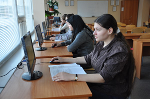
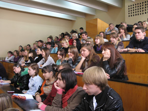
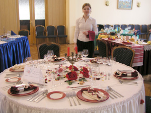
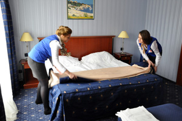

Про Київський фаховий коледж туризму та готельного господарства
Створений наказом Міністерства вищої і середньої спеціальної освіти УРСР від 05 травня 1977 р. №134. Заснований на державній формі власності і підпорядкований Міністерству освіти і науки України. Коледж розпочав свою діяльність у 1978 році з підготовки фахівців з двох спеціальностей «Організація обслуговування в готелях» та «Організація обслуговування в підприємствах громадського харчування» з переважною орієнтацією на обслуговування іноземних туристів. Упродовж двох десятиліть коледж був єдиним у Радянському Союзі, а потім в Україні навчальним закладом, який готував висококваліфікованих спеціалістів для сфери гостинності. В наш час коледж утримує провідні позиції на вітчизняному ринку освітянських послуг.
Тенденція до постійного розвитку і модернізації є запорукою нашого успіху. Сьогодні навчальний заклад готує фахівців за освітньо-кваліфікаційним рівнем «молодший спеціаліст» за 9 перспективними і привабливими для молоді спеціальностями: "Право", "Облік і оподаткування", "Фінанси, банківська справа та страхування", "Підприємництво, торгівля та біржова діяльність", "Інженерія програмного забезпечення", "Комп’ютерна інженерія", "Харчові технології", "Готельно-ресторанна справа", "Туризм". Навчання в коледжі здійснюється на основі базової та повної загальної середньої освіти, за денною та заочною формами.
Високопрофесійні, творчі педагогічні працівники забезпечують якісну підготовку майбутніх фахівців у сучасно обладнаних навчальних аудиторіях і лабораторіях, серед яких «готель «Гостинність», «Навчальний бар», «Лабораторія інформаційних систем і технологій обліку», «Туристична фірма» тощо.тощо. Коледж є єдиним ВНЗ в Україні, в якому під час процесу навчання студенти окремих спеціальностей отримують навички роботи в глобальних системах бронювання «Амадеус» та «Галілео» в режимі реального часу.
Понад 90 профільних підприємств, установ і організацій надають можливість студентам коледжу не тільки закріпити отримані теоретичні знання, а й набути професійних практичних навичок. Незабутні враження залишаються у студентів, які проходять практику-стажування за кордоном: у Греції, Німеччині, Туреччині. Наповнюють студентське життя цікавим змістом такі традиційні загальноколеджівські заходи, як: День здоров’я, тижні спеціальностей, конкурси, концерти, благодійні акції.
Студенти коледжу беруть активну участь у міських олімпіадах, спортивних змаганнях, конкурсах художньої самодіяльності та здобувають призові місця. Найкращі студенти є стипендіатами Президента України та міського Голови. За багаторічну плідну діяльність з надання освітніх послуг коледж відзначений нагородами, серед яких і Почесна Грамота Кабінету Міністрів України (1999 р.).